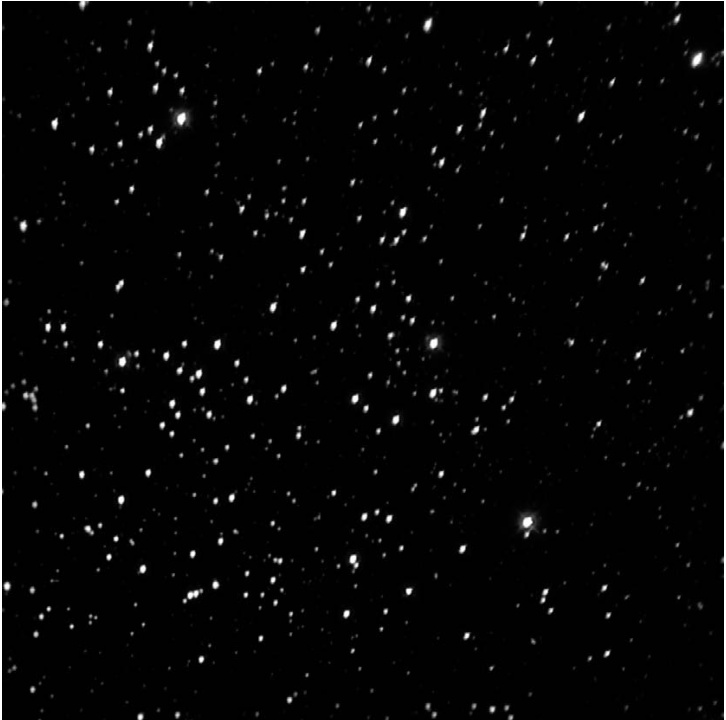

土星状星云 · Saturn Nebula (NGC 7009)

基本参数
| 参数 | 中文 | English | 数值 |
|---|---|---|---|
| 类型 | 行星状星云 | Planetary Nebula | — |
| 星座 | 宝瓶座 | Aquarius | — |
| 赤经 | Right Ascension | RA | 21h 04.2m |
| 赤纬 | Declination | Dec | −11° 21.8′ |
| 星等 | 视星等 | Magnitude | 8.0 (Rating: 4) |
| 直径 | 视直径 | Apparent Diameter | 0′.7 × 0′.5 |
| 距离 | 距离 | Distance | ~2,500–5,200 ly |
| 发现者 | 发现者 | Discoverer | William Herschel (1784) |
历史背景
The Saturn Nebula (NGC 7009) is one of the most distinctive planetary nebulae in the night sky, taking its popular name from its striking resemblance to the planet Saturn with its appendages. William Herschel discovered this celestial jewel on September 7, 1784, adding it to his growing catalogue of nebulous objects. The name stuck not because of any true connection to the ringed planet, but because, as Herschel himself noted, when viewed with early telescopes, the faint outer envelope appeared to give the nebula two ansae, or "handles," reminiscent of Saturn's famous rings.
土星状星云（NGC 7009）是夜空中最具特色的行星状星云之一，其通俗名称来源于它与土星的惊人相似——带有附属结构。威廉·赫歇尔于1784年9月7日发现了这颗天界明珠，将其纳入他日益壮大的星云状天体目录。这一名称得以流传，并非因为它与那颗环状行星有任何真正的关联，而是正如赫歇尔本人所指出的——当用早期望远镜观测时，模糊的外层包络似乎赋予了星云两个"耳状"结构（ansae），令人联想到土星著名的环带。
"A nebula which has some appearance of a-saturn" — William Herschel noted in his observations, inadvertently christening one of the sky's most evocative deep-sky objects.
"一颗带有土星般外观的星云"——威廉·赫歇尔在观测记录中如此写道，无意间为这个天空中最能引人遐想的深空天体命名。
What makes NGC 7009 particularly fascinating is its relatively small angular size combined with its high surface brightness, making it a challenging but rewarding target for observers with modest telescopes. Unlike the sprawling Helix Nebula (NGC 7293) or the Ring Nebula (M57), the Saturn Nebula rewards patient observation at higher magnifications, revealing increasingly complex structure as the eye and instrument work together.
使NGC 7009特别引人入胜的是它相对较小的角直径与较高的表面亮度相结合，对于使用普通望远镜的观测者来说，这是一个充满挑战但回报丰厚的目标。与广袤的螺旋星云（NGC 7293）或环状星云（M57）不同，土星状星云需要观测者用更高的放大倍率耐心观察，当眼睛与仪器协同工作时，复杂的结构会逐渐显现。
形态特征
At first glance through a small telescope, NGC 7009 appears as a small, elongated bluish-green disk. But increase the magnification and add a good nebula filter, and the Saturn Nebula reveals its true nature: an oval shell of ionized gas with two faint extensions projecting outward like the tips of a fat letter "I" or, indeed, Saturn's rings viewed nearly edge-on.
初用小型望远镜观察，NGC 7009呈现为一个小型、拉长的蓝绿色圆盘。但提高放大倍率并加上优质的星云滤镜后，土星状星云便展现出它的真实面目：一层电离气体的椭圆外壳，两端向外延伸的模糊结构如同粗胖字母"I"的顶端，或者——确实——土星环近乎侧向观测时的样子。
The central star, a hot white dwarf of about 20th magnitude, illuminates the surrounding nebular shell, creating the characteristic greenish hue from doubly ionized oxygen (O III) emissions that makes this nebula so distinctive to the dark-adapted eye.
中心恒星是一颗炽热的白矮星，亮度约20等，它照亮了周围的星云外壳，产生了双电离氧（O III）发射的独特绿色调，使这个星云在暗适应后的眼睛中显得如此与众不同。
The nebula's physical dimensions are approximately 0.5 light-years across, though the total extent including the fainter outer regions may be somewhat larger. Its estimated distance remains somewhat uncertain, with modern measurements placing it somewhere between 2,500 and 5,200 light-years away.
这个星云的实际直径约为0.5光年，尽管包括较暗外部区域在内的总范围可能更大一些。它到我们的距离估计仍有一定不确定性，现代测量将其置于大约2,500至5,200光年之间。
观测体验
To locate NGC 7009, begin at the 4th-magnitude star Zeta (ζ) Aquarii, then sweep approximately 1.5 degrees eastward to find this compact but luminous nebula. Under suburban skies with a 4-inch telescope at 100×, NGC 7009 is unmistakable—a bright, oval-shaped jewel with a distinctly bluish-green cast, small but clearly resolved from the star field.
要找到NGC 7009，可从4等星宝瓶座ζ开始，向东移动大约1.5度，就能发现这个紧凑但明亮的星云。在城郊天空下，用4英寸望远镜以100倍观测，NGC 7009清晰可辨——一颗明亮、椭圆形、明显带有蓝绿色调的宝石，与恒星背景明显区分。
With an O III filter, the Saturn Nebula springs into sharp relief, the central cavity becoming apparent as a darker region surrounded by the brighter shell. The faint ansae become more visible with larger apertures and excellent atmospheric conditions.
使用O III滤镜，土星状星云突然清晰呈现，中心的空腔变成一个被更亮外壳环绕的暗区。模糊的"耳状"结构在更大口径和极佳的大气条件下变得更加可见。
At 150× with an 8-inch telescope under truly dark skies, the view becomes ethereal. The oval disk shows distinct brightening around its edges—the limb-brightening effect common in planetary nebulae—while the two extensions reach outward like ghostly antennae. The central star, though faint, can occasionally be glimpsed in moments of perfect seeing.
在真正黑暗的天空下，用8英寸望远镜以150倍观察，景象变得空灵。椭圆圆盘在边缘显示出明显的亮化——这是行星状星云常见的 limb-brightening 效应——而两个延伸结构如同幽灵般的触角向外伸展。中心恒星虽然暗淡，在完美视宁度的瞬间仍偶尔能被瞥见。
The challenge of NGC 7009 lies not in its detection but in appreciating its subtle structure. This is a nebula that rewards patience, averted vision, and those rare nights when the atmosphere steadies and the full complexity of this cosmic chrysanthemum unfolds before your eyes. Each increase in aperture reveals new details: hints of internal filaments, variations in brightness across the shell, the gradual fading of the extensions into darkness.
NGC 7009的难度不在于发现它，而在于欣赏它微妙的结构。这是一个需要耐心、侧视法，以及那些大气稳定、这朵宇宙菊花的全貌在眼前展开的罕见夜晚来回报的天体。每增加一点口径，就会揭示新的细节：内部细丝的迹象、外壳各处亮度的变化、延伸结构逐渐消失在黑暗中的过程。
As you continue to study this compact nebula, you notice something peculiar—a faint wisp of material extending beyond the obvious ansae, suggesting the nebula may be more complex than previously thought...
🔒 受限于篇幅，本文仅展示部分样章。O'Meara 先生完整的观测手记、实测数据及未公开的独家配图，请参阅原著双语典藏版。
👉 立即在闲鱼获取《DEEP-SKY COMPANIONS》中英双语高清典藏版